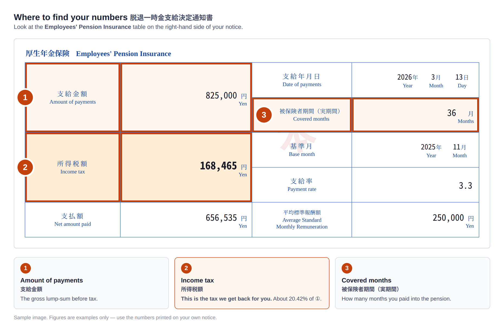

When your Lump-sum Withdrawal Payment (脱退一時金) was paid, Japanese law required a flat 20.42% to be withheld as income tax. You can claim it back by filing a tax return in Japan — and a licensed Japanese tax accountant (税理士) can do the whole thing for you.
Take out your 脱退一時金支給決定通知書 (Notice of Lump-sum Withdrawal Payments) and copy three numbers.
Nothing is sent to us. This runs entirely in your browser.
Leave this blank and we will assume 20.42% of ①.
Estimated refund from the Japanese tax office
¥0
Estimate only, based on the figures you entered and calculated with the same formula we use for the actual filing. The final amount is determined by the Japanese tax office. You pay nothing upfront — all fees are deducted from the refund once it arrives.
All three are printed in the Employees' Pension Insurance table on the right-hand side of your notice.

The notice is posted to you after the Japan Pension Service approves your Lump-sum Withdrawal Payment. Apply once it arrives — you have up to five years to claim the tax back.
Our partner labor and social security attorney can request a re-issue from the Japan Pension Service on your behalf for ¥2,000. Just tell us when you apply.
By the time the payment was made you had left Japan, so a flat 20.42% was withheld with no deductions applied at all.
Japan's Income Tax Act lets non-residents elect to be taxed on this payment as retirement income (退職所得の選択課税) instead.
That method first subtracts a retirement income deduction — ¥400,000 for every year you were covered, minimum ¥800,000. For most people it is larger than the payment itself, so the tax becomes zero and the whole 20.42% comes back.
The refund is yours by law — but it is not automatic. Someone has to file a Japanese tax return for you, and because you are overseas, a tax agent in Japan (納税管理人) has to be appointed first. That is exactly what we handle.
Typically 2–3 months from the day your notice reaches us.
Your name, contact details and the bank account where you want the refund sent. No payment details, no card.
We will email you the mailing address and a checklist in English. If you lost the notice, we can have it re-issued.
A licensed Japanese tax accountant becomes your tax agent, prepares the elective-taxation return and files it with your tax office in Japan.
The tax office pays the refund to our client account. We transfer it to you, minus our fee, and email you as soon as that is done.
Everything is deducted from your refund. There is nothing to pay in advance, ever.
¥0 upfront. You never send us money. We receive the refund from the tax office, subtract our fee, and send the rest to your account. If no refund is obtained, you owe us nothing.
Start the application now — it takes about five minutes and costs nothing to begin.
Start my refund application No upfront fee · No card required · Available in 6 languages